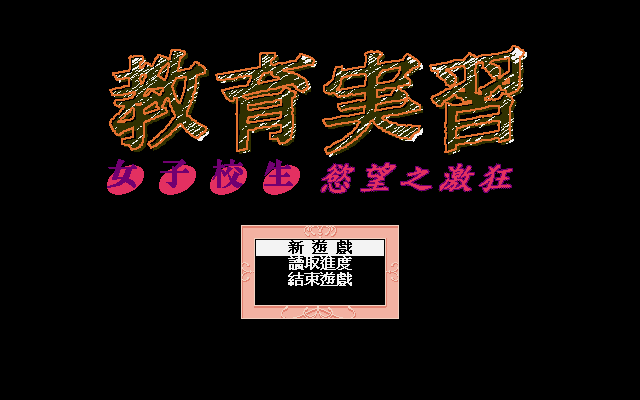
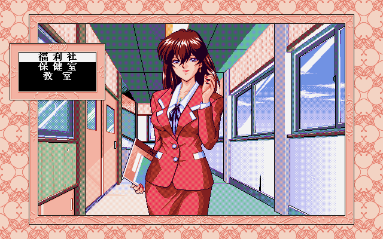
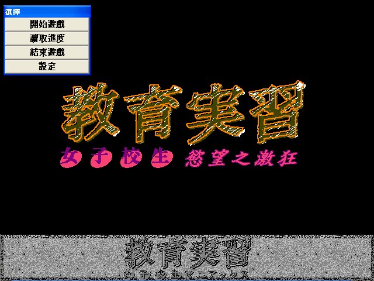

名稱：教育實習：女子校生慾望之激狂 (中文版) 簡介：Tetratech 1998年出品的18禁故事劇情遊戲，由歡樂盒中文化並代理發行 [待補]。


備註：本版為1998年DOS版。 保護：1998版為光碟，1999版無保護 備註：本遊戲有1998年DOS版與1999年Windows版兩種光碟。 備註：1998版需在Windows上安裝，然後在DOS上執行。或直接拷貝光碟所有檔案到安裝目錄。 備註：1999版執行時，若出現［位置］輸入視窗，請輸入： 音聲：WAVE\*.* BGM：MIDI\*.* CG：DATA\*.* 備註：1999版執行後若無背景音樂，請到設定中加以勾選。 檔案：maniax2.rar = 1999年Windows版